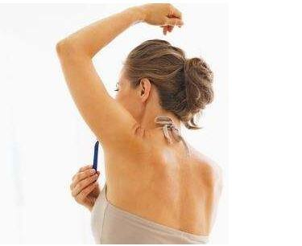

狐臭是现代良多人的难言之隐，不仅对学业、事业、爱情、交际等造成影响，还轻易让人变得抑郁、自卑。那么，哪些人易患腋臭呢?腋臭怎么治疗和预防呢?

白人、黑人 > 黄种人
假如你和外国人打过交道，你会发现，很多外国人身上都有狐臭，一般而言，西方的白人、黑人患狐臭的比例要比东方人、尤其是黄种人要多，这和西方人的爱吃肉的饮食习惯、地域天气有极大的关系，好比，我国新疆、内蒙的腋臭患者就比较多。
女性>男性
与男性比拟，女性更易患狐臭，这可能与女性的生理结构不同于男性有关。女性的体表分泌腺比男性多50%，比男性更易产生异味，女性在怀孕期间腋臭的发病率也会上升。
青少年>中老年
因为青少年处于生长发育时期，大小汗腺的分泌比较旺盛，汗液分泌天然比较多，易引发腋臭，但跟着春秋的增长，人体的朽迈，大汗腺也逐渐退化、症状可以减轻或消失，因此，一般中老年人很少患狐臭，即使年青时有狐臭，到老年时也会慢慢消失。
提 醒:
为了预防腋臭发生:平时在饮食上要多平淡少油腻,要讲究个人卫生,勤洗澡勤换衣,在治疗上应选择安全可靠的方法。